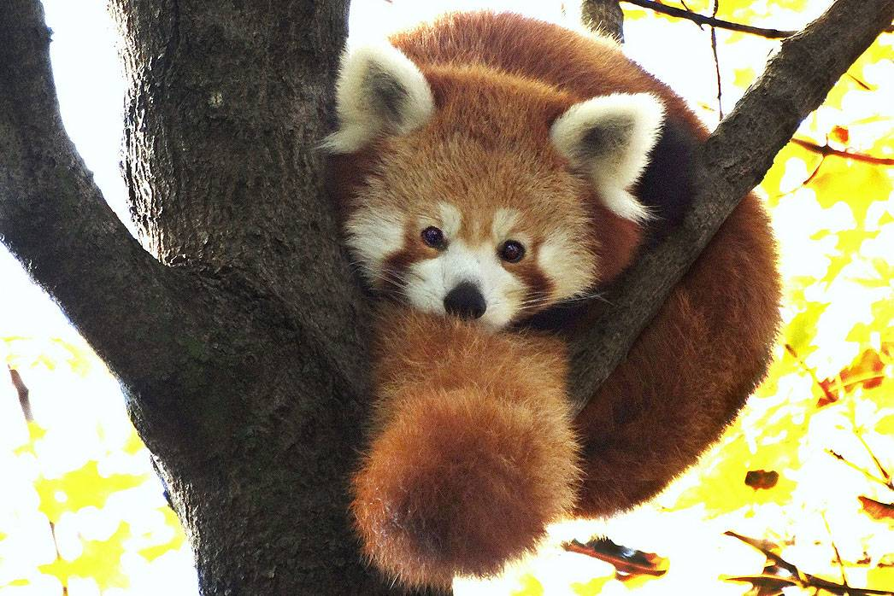
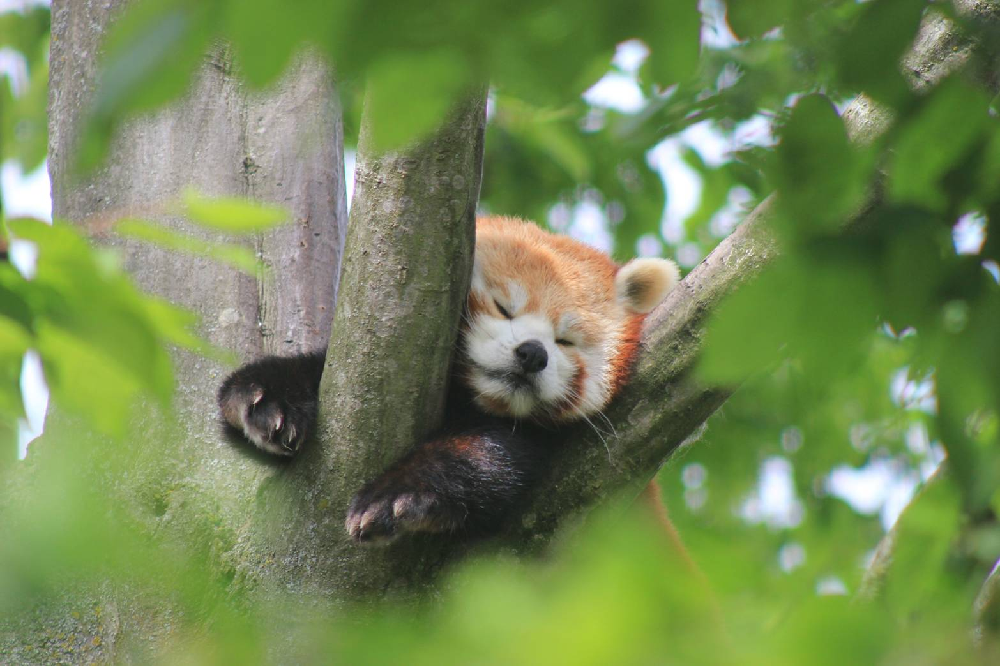
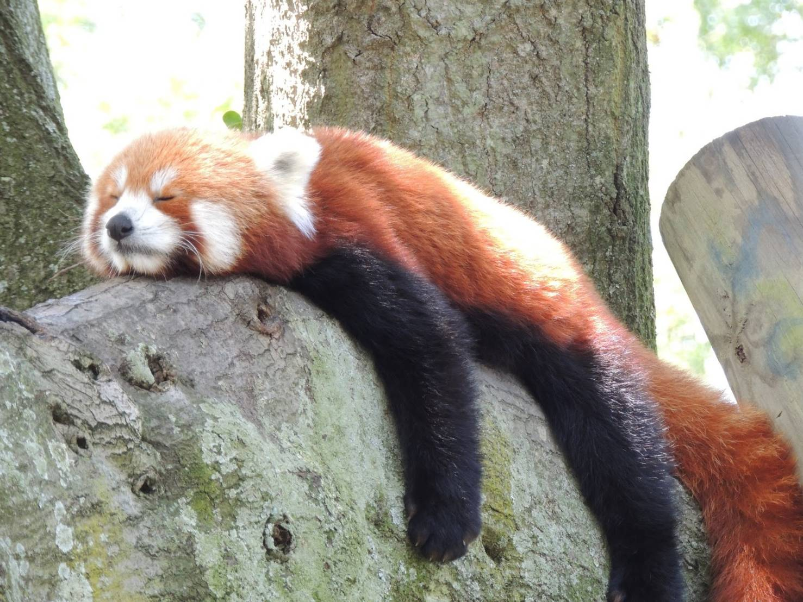
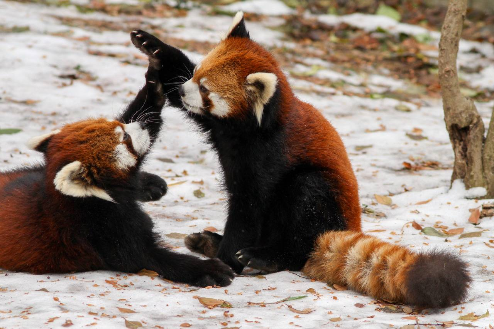
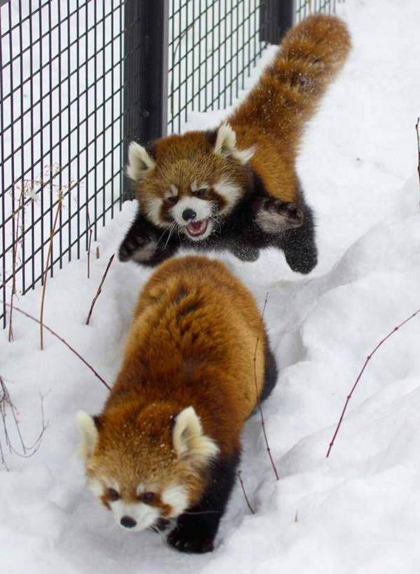
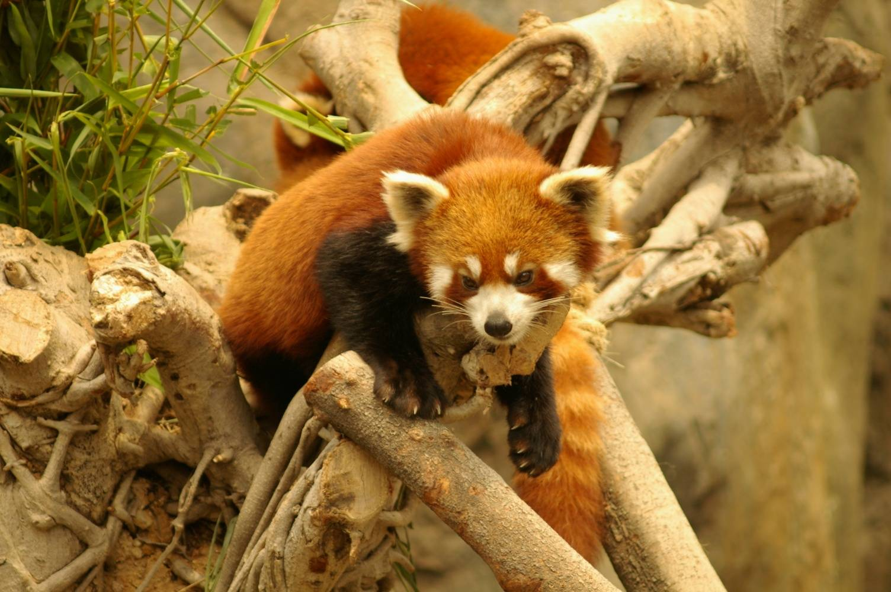
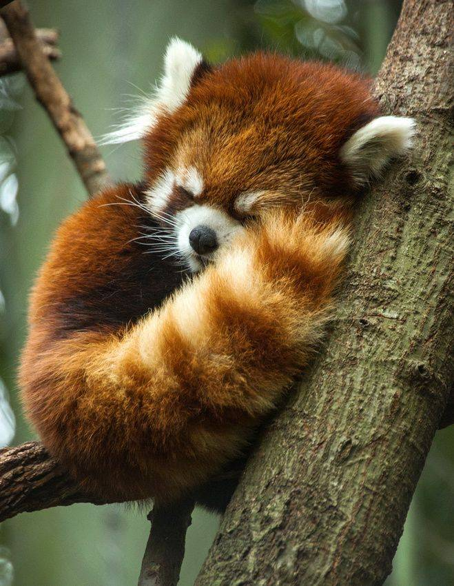
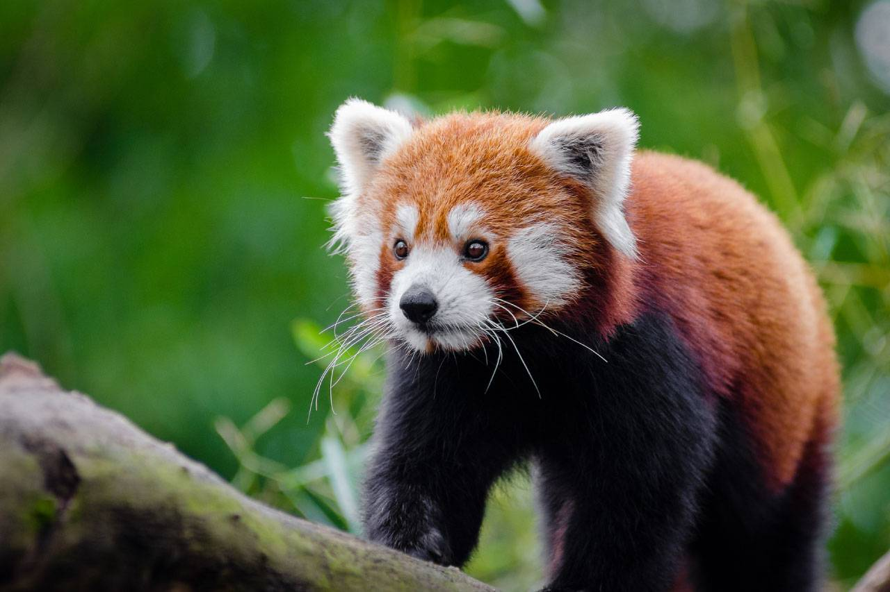
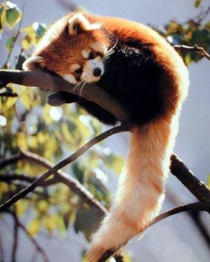
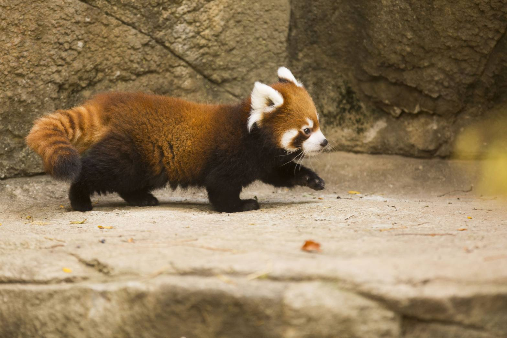

也叫紅熊貓、紅貓熊或九節狼。是一種小型哺乳動物，原產於中國西南地區。小貓熊有著紅褐色的皮毛和長而蓬鬆的尾巴，且由於前肢較短，所以步態搖擺蹣跚。小貓熊體型比家貓略大，軀幹更長且體重較重。它是一種樹棲動物，主要以竹筍為主食，但也會雜食禽蛋、鳥類、昆蟲和小型哺乳動物。在野外自然條件下它是一種獨居動物，黃昏到黎明是其主要活動期，而白天大部分時間處於靜棲狀態。 由於野外成年生存數量預估不足10,000隻，小貓熊已被國際自然保護聯盟歸為瀕危物種。儘管小貓熊受到其範圍內國家的法律保護，但是面臨棲息地破壞、棲息地零碎化、偷獵以及近交衰退的種種威脅，其數量仍在不斷減少。 它最開始被列為浣熊科或熊科，但系統發生學研究支持小貓熊所屬的小貓熊科為一獨立演化支系，且和鼬科、浣熊科同屬鼬總科。小貓熊與現生熊科動物中相對較基群的大熊貓並無緊密關係，目前本屬已知有兩物種。
| 界 | 動物界 Animalia |
| 門 | 脊索動物門 Chordata |
| 綱 | 哺乳綱 Mammalia |
| 目 | 食肉目 Carnivora |
| 科 | 小貓熊科 Ailuridae |
| 屬 | 小貓熊屬 Ailurus |
圖片來源參閱底下連結
          維基百科 圖片來源